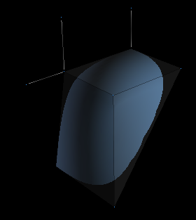

|
|
B A S I C S
In Loq Airou you model with one primitive: Creased Subdivision Surfaces.
The basic idea behind SDS(SubDivision Surfaces) is that the user creates
a cage of flat polygons and the software uses an algorithm to compute
a smooth third degree surface. This primitive has a number of advantages, first
of all it is simple to use, it creates great looking surfaces and it has
arbitrary topology. Since not all objects are smooth we have added the
ability to have creased edges making it possible to model sharp edges.
Loq Airou uses single sided surfaces, this means that surfaces
can only be visible form one side. The surface is also non-manifold,
which means that only 2 polygons can use the same edge. The
control mesh is restricted to only triangles and quads.
|
It is recommended to use mainly quads and to use triangles
in junction points between quads. This clears up the view and
makes it easier to see your model. Quad based models also tend
to be easier to make smooth.
When viewing the model you actually can see two different
surfaces, first you have the actual surface (in blue) and then
you have the cage (transparent). The cage is the geometry that
is modified so when we refer to modifying the different parts
of model we always refer to the cage, and not the actual surface.
|

|